ROS2 기초 1차시 - 로봇과 리눅스¶
로봇(Robot)은 어떤 작업이나 조작을 자동으로 할 수 있는 기계 장치를 말합니다. 오늘날 우리가 익숙하게 쓰는‘로봇’이라는 용어는1920년에 체코슬로바키아 극작가인 차펙(Karel Čapek)이<로섬의 만능 로봇(Rossum’s Universal Robots, R.U.R.)>이라는 희곡에서 처음 사용한 것이 그 기원이 되었다고 합니다. 로봇의 어원은 체코 어로 천한 노동, 중노동, 강제 노동 등을 뜻하는 ‘로보타(robota)’인데요. 연극의 내용은 뛰어난 과학자로섬과 그의 아들이 인간에게 무조건 복종하고 모든 육체적 노동을 대신해 줄 로봇을 만들어 내는 데로섬의 동료가 로봇에게 감정을 준 이후 로봇이 점점 일을 싫어하게 되면서 결국은 반란을 일으켜 사람들을 죽이고 세계를 정복하게 된다는 내용입니다. 영화<터미네이터>, <매트릭스> 등여러SF영화의 줄거리가 떠오르기도합니다. 그만큼 극작가 차펙의 희곡이 후대에 끼친 영향이 크다는 것이겠죠? 물론 이때까지도 로봇은 이렇게 상상 속의 존재에 불과했습니다. [출처] 로봇의 탄생과 발전 그리고 미래|작성자 한국과학기술연구원
상상 속의 존재였던 로봇. 그러다1950년대에 최초의 산업용 로봇 유니메이트가 등장하면서 로봇에 관한 연구가 급속도로 발전하기 시작합니다. 최초의 산업용 로봇 유니메이트는 공장에서 막 생산되어 뜨거운 금속 사출물을 운반하는 역할을 했습니다. 인간이 하기 힘든 일을 대신하기 시작한 것이죠. 유니메이트 이후에도 장애인 환자를 돕는 로봇 팔, 자동차를 조립하는 생산용 로봇 등이 나오기 시작했습니다. 단순 반복 작업이 가능하고 부상의 위험이 없다는 점 때문에 다양한 분야에서 생산 공정에 맞는 로봇을 만들어 사용하였죠. 용도와 사용처가 명확하기 때문에 이러한 산업용 로봇들은 인간을 닮기보다는 굴삭기나 재봉틀처럼 용도에 딱 맞는 기계에 더 가까운 모습을 하고 있었습니다. 1980년대 이후에는 용도에 따라 산업용, 의료용, 가정용, 탐사용, 군사용 등 그 용도가 다양해졌습니다. 로봇을 전문적으로 제작하는 기업도 생겼고 연구자도 늘어났습니다. 연구가 점점 고도화되면서 로봇을 조종하는 방법도 용도에 따라 달라졌고요. 그 결과 인간이 직접 수동 조작을 해야하는 로봇, 인간이 설정해 둔 순서대로 따라 하는 로봇을 넘어 스스로 학습 능력이나 판단력을 지닌 로봇까지 개발되면서 발전을 거듭하게 되었습니다. [출처] 로봇의 탄생과 발전 그리고 미래|작성자 한국과학기술연구원
1999년 일본에서 출시된 반려견을 닮은 강아지 로봇 아이 보(AiBo)는 실제 강아지처럼 인간과 상호 교류가 가능해서 큰 인기를 끌었습니다. 그리고 마침내2000년대에 이르러서는 한국과학기술연구원(KIST) 연구 팀이 개발한 마루(MAHRU), 한국과학기술원(KAIST) 연구 팀이 개발한 휴보(HUBO), 일본 혼다에서 개발한 아시모(ASIMO) 등 직립 보행하는 인간형 로봇이 만들어지기도했습니다. [출처] 로봇의 탄생과 발전 그리고 미래|작성자 한국과학기술연구원 마루의 경우, 무선 네트워크로 연결된 서버 컴퓨터를 통해 로봇에게 인식 능력을 제공하는‘네트워크 기반 휴머노이드’로 개발되었다고 합니다. 휴보의 경우, 2013년 미 국방부에서 열린 인명 구조 로봇 선발 대회인DARPA 로보틱스 챌린지(DRC)에서 1위를 했다고 합니다. 당시 대회에서는 차량 운전, 사다리 타기, 장애물 제거 등 인간 구조 대원이 실제로 재난 현장에서 하는 활동을 해내야했다고 하는데 이 대회에서 1등을 했다니 대단하죠?
이처럼 로봇 관련 연구는 소수의 산업용 로봇으로 시작하여 보다 정확하고 안전한 수술을 할 수 있도록 돕는 의료용 로봇이나 인간과 대화하며 상호 작용을 하는 대화형 로봇에 이르기까지 꾸준히 발전해 왔습니다. 그러다 이제는 집안을 스스로 청소하는 로봇 청소기처럼 가정용으로 보급되기까지에 이르렀습니다. 산업용 로봇이 처음 출시된 게1950년대였던 걸 생각하면 약70여 년 동안 이루어진 발전이 어마 무시하다는 생각이 듭니다. [출처] 로봇의 탄생과 발전 그리고 미래|작성자 한국과학기술연구원
로봇의 미래 그렇다면 앞으로 로봇은 어떻게 발전하게 될까요? 불과 몇 년 전 있었던 코로나19의 전 세계적인 유행으로 인해 다양한 분야에서 비대면 수요가 크게 증가했던 걸 다들 기억하실 겁니다. 당시 전염병 위험 때문에 모든 것이 마비되고 멈췄다고 해도 과언이 아닌데요. 로봇은 전염병에 걸리지도 않는 데다 전파할 위험도 없습니다. 게다가 쉬지 않고 일을 할 수 있기 때문에 생산 작업 분야에서 수요가 크게 증가하면서 사회 곳곳에 빠르게 자리 잡게 되었습니다. [출처] 로봇의 탄생과 발전 그리고 미래|작성자 한국과학기술연구원
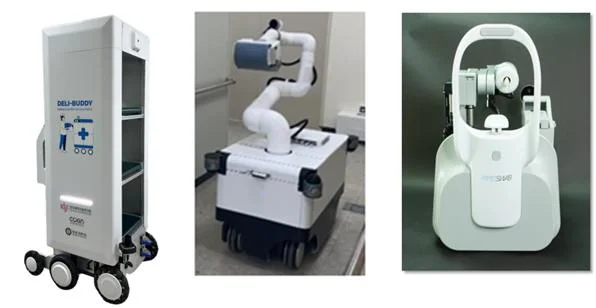
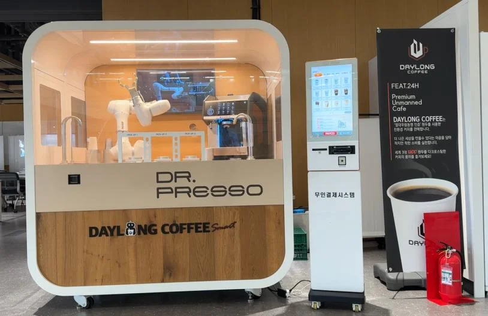
로봇의 미래 코로나가 잠잠해진 요즘도 단순하고 반복적인 노동이 필요한 분야 또는 인간이 하기에 신체적 부상의 위험이 있는 분야를 중심으로 로봇이 적극 사용되는 중입니다. 그래서 우리는 익숙하게 키오스크로 음식을 주문하고 있습니다. 로봇은 단순히 주문을 받는 것뿐만 아니라 사람 대신 음식이나 음료를 만들기도하고 서빙을 하기도합니다. 덕분에 키오스크로 주문을 하고 로봇이 음료를 만드는 카페의 경우에는 아예 직원 없이 무인으로 운영되는 것도 가능해졌죠. 공항이나 박물관 등에는 여러 가지 언어로 사람들의 질문에 친절히 답해 주는 안내원 로봇이 있게 되었고요. 테슬라 휴머노이드 로봇 옵티머스
. 사진 =테슬라 야간에는 사람 대신 공원을 순찰하는 순찰 로봇이 위험을 방지합니다. 일손이 부족한 물류 센터에서 빠른 일 처리를 돕는 물류 로봇이 등장하기도했습니다. 우리가 자각하지 못할 만큼 자연스럽게 로봇이 일상 생활 속으로 스며들고 있는 겁니다. [출처] 로봇의 탄생과 발전 그리고 미래|작성자 한국과학기술연구원
하지만 미래에 어떤 로봇이 만들어지든 아이작 아시모프(Isaac Asimov)라는SF소설가가 만들었던 로봇이 지켜야할 원칙은 지켜지게 될 거예요. 1942년 아이작 아시모프의SF소설‘런 어 라운드(Runaround)’에서 처음 언급된 로봇의3원칙은 다음과 같습니다. 제1원칙 로봇은 인간에게 해를 끼쳐서는 안 되며 위험에 처해 있는 인간을 방관해서는 안 된다. 제2원칙제1원칙에 위배되지 않는 경우 로봇은 인간의 명령에 반드시 복종해야만한다. 제3원칙제1원칙 과제2원칙에 위배되지 않는 경우 로봇은 자기 자신을 보호해야한다. 3원칙을 만든 이후 아이작 아시모프는 인류의 집단 안전을 위해 제0원칙을 추가했다고 합니다. 제0원칙은 다른3원칙보다 더 상위에서 절대적으로 지켜야하는 법칙이라고 해요. 제0원칙 로봇은 인류에게 해를 가하거나 행동을 하지 않음으로써 인류에게 해가 가도록해서는 안 된다. [출처] 로봇의 탄생과 발전 그리고 미래|작성자 한국과학기술연구원
컴퓨터 구조(Booting, CPU 작동 원리, POST) 폰 노이만 구조 폰 노이만 구조는 중앙 처리 장치(CPU), 메모리, 프로그램 세 가지 요소로 구성되어 있습니다. CPU와 메모리는 서로 분리되어 있고 둘을 연결하는 버스(Bus)를 통해 명령어 읽기, 데이터의 읽고 쓰기가 가능-> 메모리 안에 프로그램과 데이터 영역의 물리적 구분 없음-> 같은 버스를 통해CPU가명령어와 데이터에 동시 접근 불가 프로그램 내장 방식 컴퓨터-> 폰 노이만이 전 하드웨어 전선을 바꿔야함-> 폰 노이만은 프로그램만 바꾸면 되기에 편의성이 증가
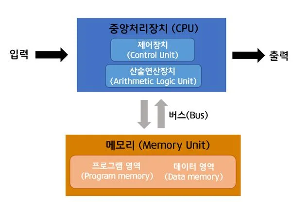
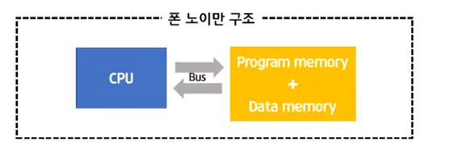
컴퓨터 구조(Booting, CPU 작동 원리, POST)
-
전원인가(Power On)
-
컴퓨터의 전원 버튼을 누르면 메인 보드에 전원이 공급되면서 부팅 과정이 시작됩니다. 메인 보드의BIOS(Basic Input/Output System) 칩에 저장된 펌 웨어가 실행됩니다.
-
POST(Power-On Self-Test) 실행
-
BIOS는 컴퓨터의 주요 하드웨어 구성 요소(CPU, 메모리, 그래픽 카드 등)들을 점검하는 POST를 실행합니다. 이상이 없으면 짧은 비프 음을 내고 다음 단계로 진행합니다.
-
BIOS 설정 로드
-
POST를 통과하면BIOS는CMOS(Complementary Metal-Oxide Semiconductor)에 저장된 설정 값을 읽어 옵니다. 여기에는 부팅 순서, 시간, 하드 디스크 정보 등이 포함됩니다. 전원인가 POST (Power-On Self- Test) 실행 BIOS 설정 로드 부트로더 (Boot Loader)실행 운영 체제 커널 로드 초기 프로세스 실행 사용자 인터페이스 실행
컴퓨터 구조(Booting, CPU 작동 원리, POST) 4. 부트로더(Boot Loader) 실행
- BIOS는 설정된 부팅 순서에 따라 부팅 가능한 장치(하드 디스크, USB, CD-ROM 등)를 찾아 부트로 더를 실행합니다. 부트로더는 운영 체제 커널을 메모리에 적재하고 제어권을 넘기는 역할을 합니다. 5. 운영 체제 커널 로드
- 부트로더는 하드 디스크에서 운영 체제 커널을 찾아 메모리에 적재합니다. 커널은 운영 체제의 핵심 부분으로, 하드웨어를 제어하고 시스템 자원을 관리합니다. 6. 초기 프로세스 실행
- 커널은 시스템 초기화를 마치고init(리눅스) 또는smss.exe(윈도우) 같은 첫 번째 프로세스를 실행합니다. 이 프로세스는 운영 체제의 나머지 부분을 로드하고 실행합니다. 7. 사용자 인터페이스 실행
- 사용자 인터페이스(데스크톱 환경, 로그인 화면 등)가 실행되어 사용자가 컴퓨터를 사용할 수 있게 됩니다 전원인가 POST (Power-On Self- Test) 실행 BIOS 설정 로드 부트로더 (Boot Loader)실행 운영 체제 커널 로드 초기 프로세스 실행 사용자 인터페이스 실행
컴퓨터 구조(Booting, CPU 작동 원리, POST) 바이오스 단계
- PC의 전원 스위치를 켜면 제일 먼저 바이오스BIOS, Basic Input/Output System가동작
- 바이오스는 보통ROM에 저장되어 있어 흔히ROM-BIOS라고 부름
- 바이오스는PC에 장착된 기본적인 하드웨어(키보드, 디스크 등)의 상태를 확인한 후 부팅 장치를 선택하여 부팅 디스크의 첫 섹터에서512B를 로딩함
- 512B를 마스터 부 트 레코드MBR라고 하며, 여기에는 디스크의 어느 파티션에2차 부팅 프로그램 (부트로더)이 있는지에 대한 정보가 저장되어 있음. MBR은부트로더를 찾아 메모리에 로딩하는 작업까지 수행
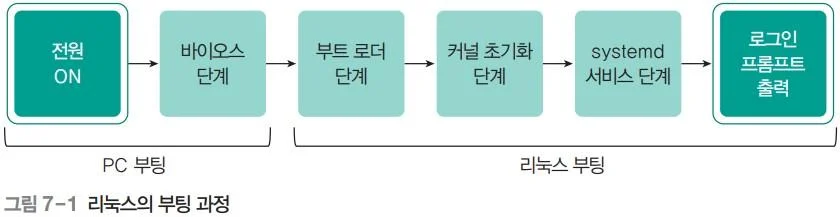
컴퓨터 구조(Booting, CPU 작동 원리, POST) CPU란 무엇인가? 컴퓨터의 뇌라고 할 수 있는 중앙 처리 장치(Central Processing Unit, CPU)는 주 기억 장치인 메모리에서 명령어를 읽어 들이고 이를 해석하여 수행하는 작업을 맡는다. CPU의 주요 구성 요소로는 산술 및 논리 연산을 수행하는ALU(Arithmetic Logic), 명령어의 순서와 수행을 제어하는 제어 유닛(Control Unit), 그리고 중간 결과와 작업 상태를 저장하는 레지스터(Register)가있다.
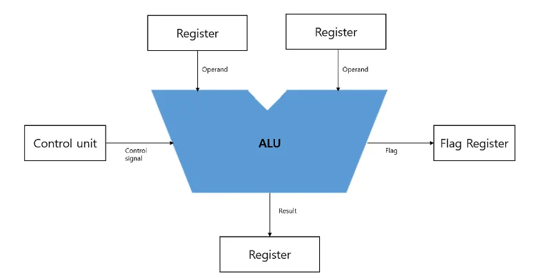
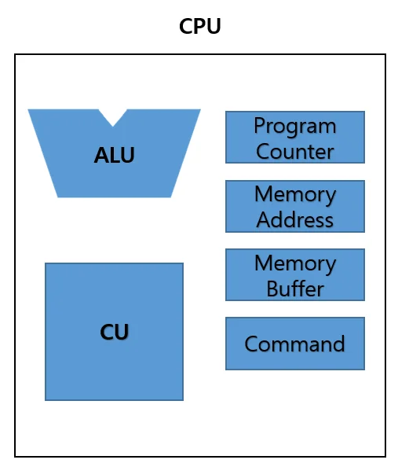
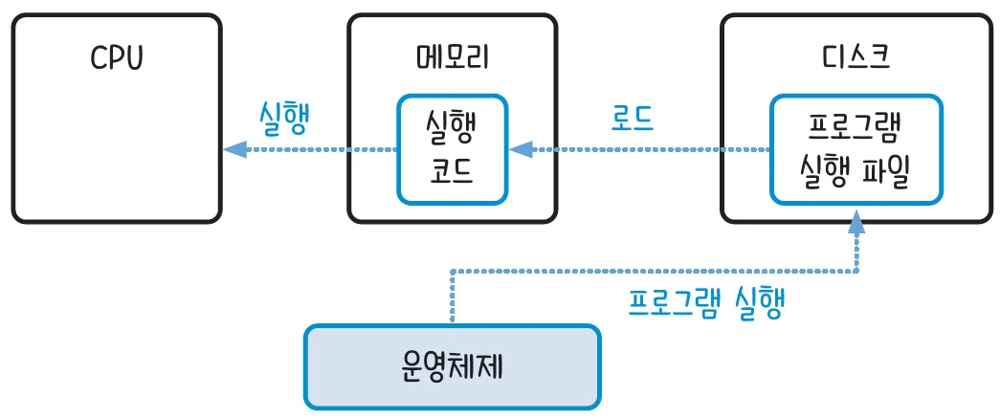
마이크로프로세서
- 마이크로프로세서(Microprocessor)는 산술 논리 장치, 제어 장치, 레지스터를 하나의 단일 체 집적 회로로 구성한 것을 의미한다.
- CPU와의 차이: CPU뿐만 아니라GPU(Graphic Processing Unit), DSP(Digital Signal Processor)도포함 커널
- 하드웨어를 초기화해 사용할 수 있게하는 운영 체제의 핵심 부분. 여러 소프트웨어가 운영 체제에서 잘 작동할 수 있도록 메모리와 프로세스를 관리하고, 네트워크를 연결하는 등 주요 기능을 제공
파일, 파일 시스템
- 파일: 정보를 저장하는 기본 단위
- 파일 시스템: HDD, SSD 등 저장 장치에 파일을 저장하고 관리하는 소프트웨어. 파일 시스템은 파일의 이름, 크기, 저장 위치를 저장하고, 파일에 대한 읽기/쓰기/실행을 제어하며, 파일의 권한을 관리하고 저장 장치에 대한 접근도 제어 네트워크 시스템
- 네트워크 드라이버(network driver) : 유선 랜, 와이파이, 블루투스 등 네트워크 장치를 초기화해
- 사용할 수 있게하는 장치 드라이버
- 네트워크 스택(network stack) : 네트워크 장치를 통해 들어온 네트워크 트래픽을 처리하는 네트워크 프로토콜을
- 구현한 소프트웨어
- 네트워크 프로토콜(network protocol) : 네트워크에서 데이터를 주고받는 데 적용되는 통신 규약 Application 작동 원리(마이크로프로세서, 메모리, 저장 장치)

장치
- 그래픽 카드, 랜 카드, 디스크 드라이브, 마우스, 키보드 등 컴퓨터에 연결해 사용하는 모든 기기 컴퓨터 주 기억 장치 메모리(RAM)
- 컴퓨터가 켜지는 순간부터CPU 연산과 동작에 필요한 모든 내용이 저장되는 곳 컴퓨터 저장 장치 메모리(플래시 메모리Flash memory)
- RAM과 차별화된 비휘발성 메모리ROM중 여러 번 다시 작성할 수 있는EPROM(Erasable PROM)의 한 종류인 플래시 메모리가 많이 사용 Application 작동 원리(마이크로프로세서, 메모리, 저장 장치)
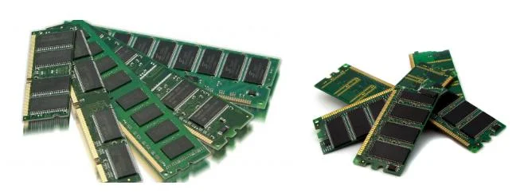
Application 작동 원리(마이크로프로세서, 메모리, 저장 장치)
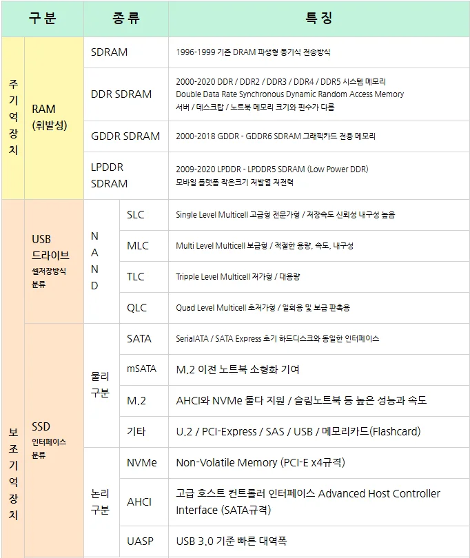
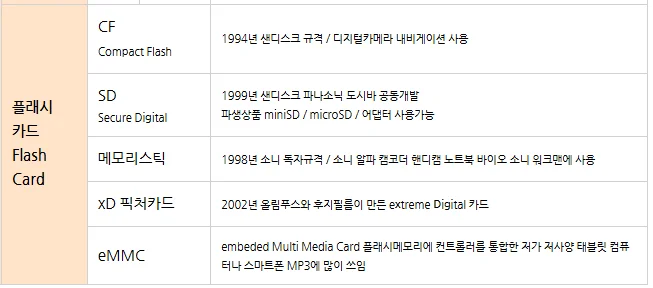
Application 작동 원리(마이크로프로세서, 메모리, 저장 장치) 메모리 구조 프로그램이 실행되기 위해서는 먼저 프로그램이 메모리에 로드(load)되어야합니다. 또한, 프로그램에서 사용되는 변수들을 저장할 메모리도 필요합니다. 따라서 컴퓨터의 운영 체제는 프로그램의 실행을 위해 다양한 메모리 공간을 제공하고 있습니다. 프로그램이 운영 체제로부터 할당받는 대표적인 메모리 공간은4종류입니다.
- 코드(code) 영역
- 데이터(data) 영역
- 스택(stack) 영역
-
힙(heap) 영역
-
코드(code) 영역 메모리의 코드(code) 영역은 실행할 프로그램의 코드가 저장되는 영역으로 텍스트(code) 영역이라고도 부릅니다. CPU는 코드 영역에 저장된 명령어를 하나씩 가져가서 처리하게 됩니다.
-
데이터(data) 영역 메모리의 데이터(data) 영역은 프로그램의 전역 변수와 정적(static) 변수가 저장되는 영역입니다. 데이터 영역은 프로그램의 시작과 함께 할당되며, 프로그램이 종료되면 소멸합니다.

Application 작동 원리(마이크로프로세서, 메모리, 저장 장치) 스택(Stack) 영역 메모리의 스택(stack) 영역은 함수의 호출과 관계되는 지역 변수와 매개 변수가 저장되는 영역입니다. 스택 영역은 함수의 호출과 함께 할당되며, 함수의 호출이 완료되면 소멸합니다. 이렇게 스택 영역에 저장되는 함수의 호출 정보를 스택 프레임(stack frame)이라고 합니다. 스택 영역은 푸시(push) 동작으로 데이터를 저장하고, 팝(pop) 동작으로 데이터를 인출합니다. 이러한 스택은 후 입 선출(LIFO, Last-In First-Out) 방식에 따라 동작하므로, 가장 늦게 저장된 데이터가 가장 먼저 인출됩니다. 스택 영역은 메모리의 높은 주소에서 낮은 주소의 방향으로 할당됩니다. 힙(Heap) 영역 메모리의힙(heap) 영역은 사용자가 직접 관리할 수 있는‘그리고 해야만하는’ 메모리 영역입니다. 힙 영역은 사용자에 의해 메모리 공간 이동적으로 할당되고 해제됩니다. 힙 영역은 메모리의 낮은 주소에서 높은 주소의 방향으로 할당됩니다. 스택 힙 - 매우 빠른 액세스 - 변수를 명시적으로 할당 해제할 필요가 없습니다. - 공간은CPU에 의해 효율적으로 관리됩니다. - 지역 변수 - 스택 크기 제한(OS에 따라 다름) - 변수의 크기를 조정할 수 없습니다. - 변수는 전역적으로 액세스할 수 있습니다. - 메모리 크기 제한 없음 - (상대적으로) 느린 액세스 - 효율적인 공간 사용을 보장하지 못하면 메모리 블록이 할당된 후 시간이 지남에 따라 메모리가 조각화되어 해제될 수 있습니다. - 메모리를 관리해야합니다(변수를 할당하고 해제하는 책임이 있습니다) 메모리 구조
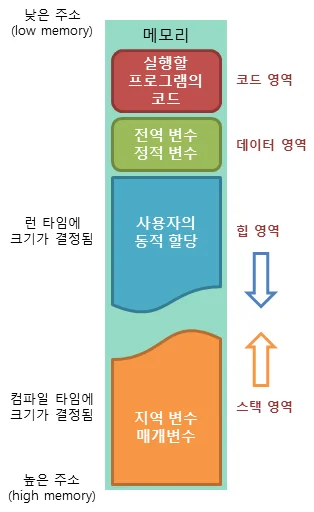
Stack, Queue, Circular Queue, Deque Stack Queue
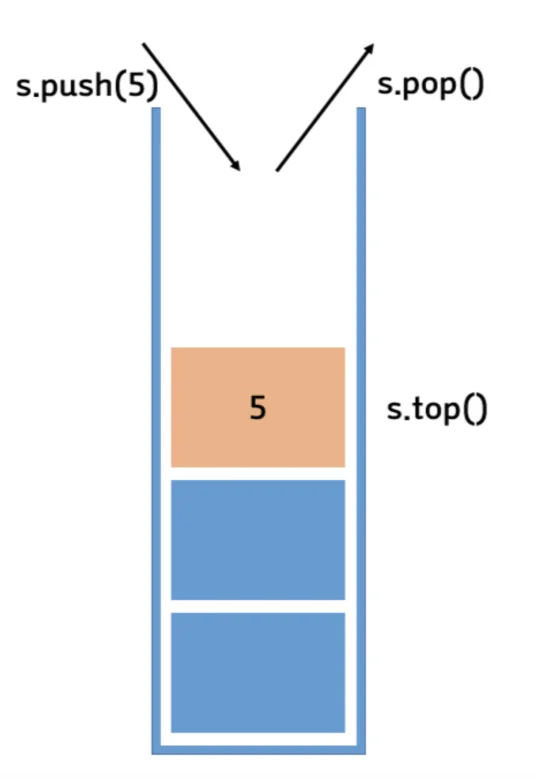
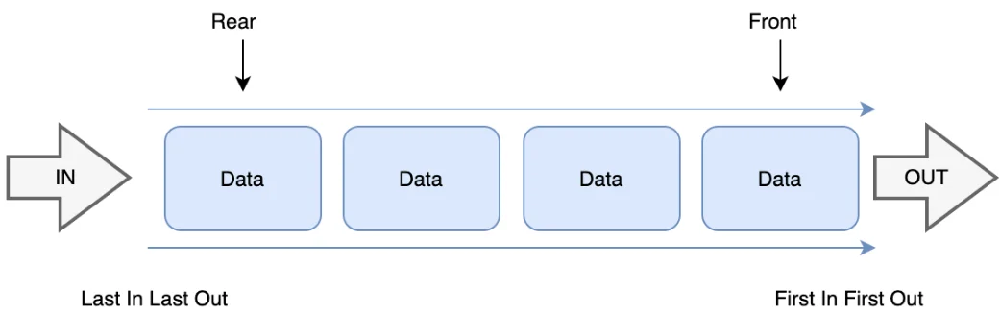
Stack, Queue, Circular Queue, Deque Circular Queue Deque (Double Ended Queue)
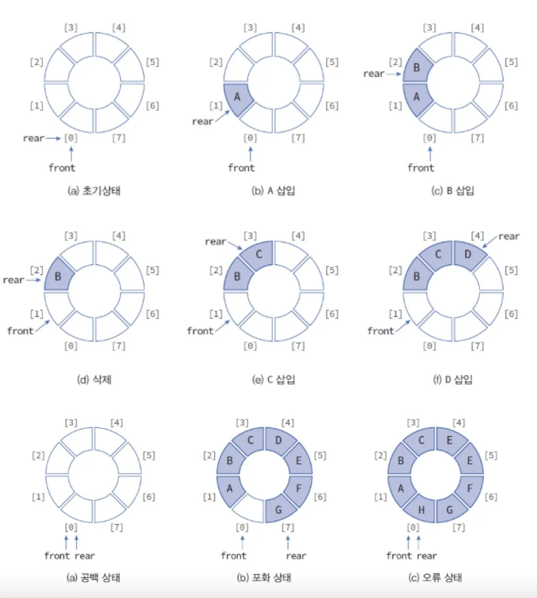
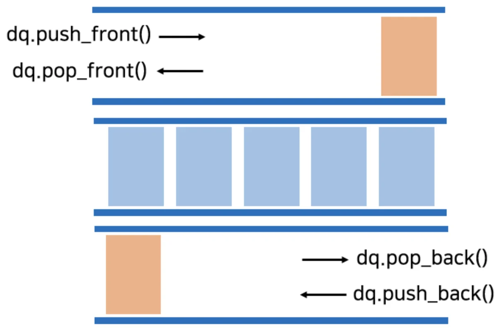
컴퓨터 구조(Booting, CPU 작동 원리, POST) 프로그램이란 프로그램의 의미는 어떤 작업을 하기 위해 해야할 일들을 순서대로 나열한 것으로 쉽게 말해 컴퓨터에서 어떤 작업을 위해 실행할 수 있는'정적인 상태'의 파일이라고 볼 수 있다. 컴퓨터에서의'프로그램'은 사용자가 원하는 일을 처리할 수 있도록 프로그래밍 언어를 사용하여 올바른 수행 절차를 표현해 놓은 명령어들의 집합이다. 그에 필요한 데이터를 묶어 놓은 파일로 보조 기억 장치에 저장되어 있다. 프로세스(Process)란 무엇인가 프로그램이 실행 되서 돌아가고 있는 상태, 컴퓨터에서 연속적으로 실행되고 있는'동적인 상태'의 컴퓨터 프로그램이다 [특징]
- 프로세스는 각각Code, Data, Stack, Heap의 구조로 되어 있는 독립된 메모리 영역을 할당받는다.
- 다른 프로세스의 자원에 접근하려면 프로세스 간의 통신(IPC)을 사용해야한다.
- 프로세스는 최소 하나 이상의 스레드를 포함한다.
- 각 프로세스는 별도의 주소 공간에서 실행되며, 서로 독자적인 메모리 공간을 갖기 때문에 서로 메모리 공간을 공유할 수 없다. 즉, 다른 프로세스의 변수나 자료 구조에 접근할 수 없다.
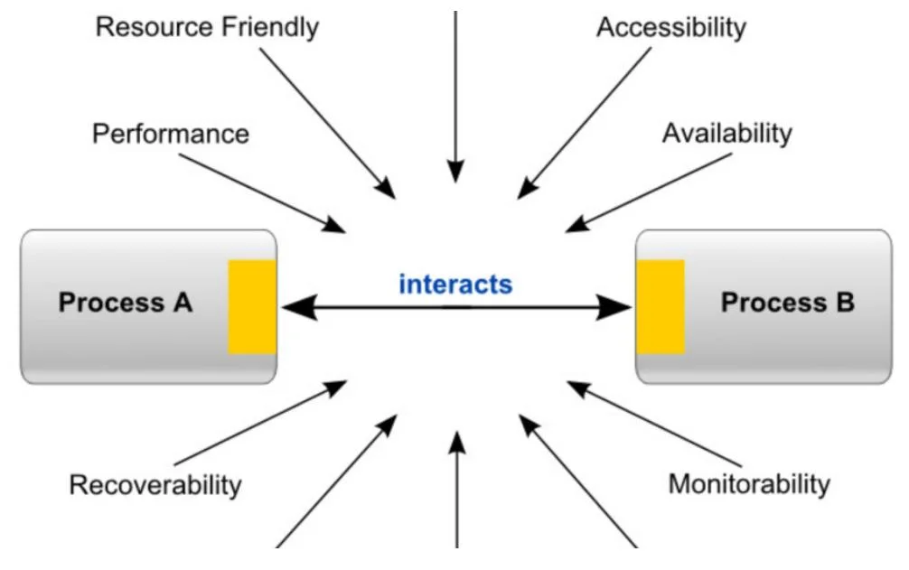
컴퓨터 구조(Booting, CPU 작동 원리, POST) 스레드(Thread)란 무엇인가
- 스레드(Thread)는 프로세스가 할당받은 자원을 이용하는 실행 단위이자, 프로세스의 특정한 수행 경로이자 프로세스 내에서 실행되는 여러 흐름의 단위이다.
- 스레드는 프로세스 내에서 프로세스의 자원을 이용해서 실제로 작업을 수행하는 일꾼이다.
- 스레드가 소속된 프로세스가 운영 체제로부터 자원을 할당받으면 그 자원을 스레드가 사용한다.
- 프로세스는 최소 한 개 이상의 스레드를 가지며 이 스레드를 메인 스레드(main thread)라고 한다. [스레드의 특징]
- 각 스레드는 독자적인 스택(Stack) 메모리를 갖는다.
- 스레드는 프로세스 내에서 각각 스 택만 할당받고Code, Data, Heap 영역은 공유한다.
- 스레드는 한 프로세스 내에서 동작되는 여러 실행의 흐름으로, 프로세스 내의 주소 공간이나 자원들을 같은 프로세스 내의 스레드끼리 공유하며 실행된다.
- 각각의 스레드는 별도의 레지스터와 스택을 갖고 있지만, 힙 메모리는 서로 읽고 쓸 수 있다.
- 한스 레드가 프로세스 자원을 변경하면, 다른 이웃 스레드(sibling thread)도그 변경 결과를 즉시 볼 수 있다.
- 스레드는 메모리를 공유하기 때문에 동기화, 데드 락 등의 문제가 발생할 수 있다.
- 스레드는 대부분의 현대 운영 체제가 지원하고 있으며, 이와 관련된 주요 라이브러리로는POSIX Pthreads, Windows threads, Java threads 가 있다. 프로세스(Process)와스 레드(Thread)
- 프로세스와 스레드의 관계: 프로세스는 스레드의 컨테이너이다. 스레드의 정보를 담고 있는 것에 불과하다.
- 프로세스와 스레드의 차이점: 프로세스는 각 작업(Task)마 다 운영 체제로부터 자원을 할당받기 위해 시스템 콜을 하는 부담이 생기지만 멀티 스레드를 사용한다면 시스템 콜을 한 번만 해도 되기 때문에 효율적이다.
- 또한IPC 방식보다는 스레드 간 통신이 덜 복잡하고 시스템 자원 사용이 더 적으므로 통신의 부담도 줄일 수 있다.
컴퓨터 구조(Booting, CPU 작동 원리, POST) 멀티 프로세스와 멀티 스레드 멀티 스레딩이란
- 하나의 응용 프로그램을 여러 개의 스레드로 구성하고 각 스 레드로 하여금 하나의 작업을 처리하도록하는 것이다.
- 윈도우, 리눅스 등 많은 운영 체제들이 멀티 프로세싱을 지원하고 있지만 멀티 스레딩을 기본으로 하고 있다.
- 웹 서버는 대표적인 멀티 스레드 응용 프로그램이다. 멀티 스레딩의 장점
- 시스템 자원 소모 감소(자원의 효율성 증대)
- 프로세스를 생성하여 자원을 할당하는 시스템 콜이 줄어들어 자원을 효율적으로 관리할 수 있다.
- 시스템 처리 량 증가(처리 비용 감소)
- 스레드 간 데이터를 주고받는 것이 간단해지고 시스템 자원 소모가 줄어들게 된다.
- 스레드 사이의 작업량이 작아Context Switching이 빠르다.
- 간단한 통신 방법으로 인한 프로그램 응답 시간 단축
- 스레드는 프로세스 내의Stack 영역을 제외한 모든 메모리를 공유하기 때문에 통신의 부담이 적다. 멀티 스레딩의 단점
- 주의 깊은 설계가 필요하다.
- 디버깅이 까다롭다.
- 단일 프로세스 시스템의 경우 효과를 기대하기 어렵다.
- 다른 프로세스에서 스레드를 제어할 수 없다. (즉, 프로세스 밖에서 스레드 각각을 제어할 수 없다.)
- 멀티 스레드의 경우 자원 공유의 문제가 발생한다. (동기화 문제)
- 하나의 스레드에 문제가 발생하면 전체 프로세스가 영향을 받는다. *멀티 프로세스 대신 멀티 스레드를 사용하는 이유는? 프로그램을 여러 개 키는 것보다 하나의 프로그램 안에서 여러 작업을 해결하는 것이 더 효율적이기 때문이다.
리눅스CLI 실습(디렉토리, 계정, 기본 명령어 등)
운영 체제란 무엇인가? 운영 체제(Operating System, OS)는 사용자가 컴퓨터를 사용하기 위해 필요한 소프트웨어 일반적으로 컴퓨터를 사용하면서 실행한 모든 프로그램들은 운영 체제에서 관리하고 제어한다 운영 체제 목적 컴퓨터의 하드웨어 관리+ 사용자 편의 제공 컴퓨터의 성능을 높이고(performance), 사용자에게 편의성 제공(Convenience)을 목적으로 하는 컴퓨터 하드웨어 관리하는 프로그램 리눅스란 리눅스(Linux)는 리누스 토르발즈가 유닉스(Unix)에 기반하여 만든 운영 체제 특징:
- 독립된 플랫폼을 갖는 운영 체제
- 빠른 업데이트
- 강력한 네트워크 지원
- 다중 직업과 가상 터미널 환경 지원
- 유닉스 호환
- 공개형 오픈 소스 운영 체제
- 다중 사용자 환경 지원
- 저사양 컴퓨터에서 서버 구축 가능
- 이식성과 확장성 리눅스와 운영 체계
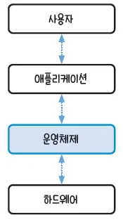
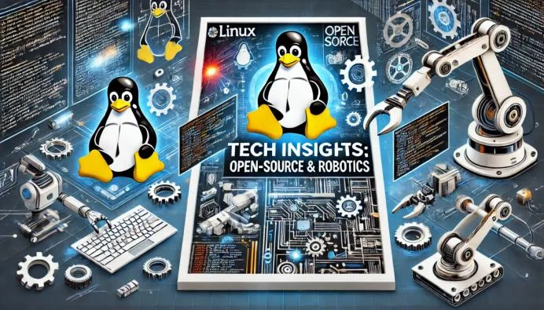
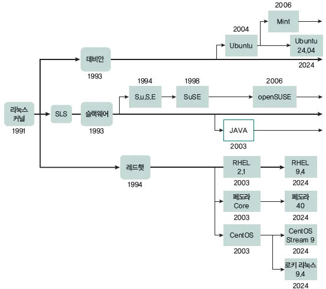
운영 체제의 역사
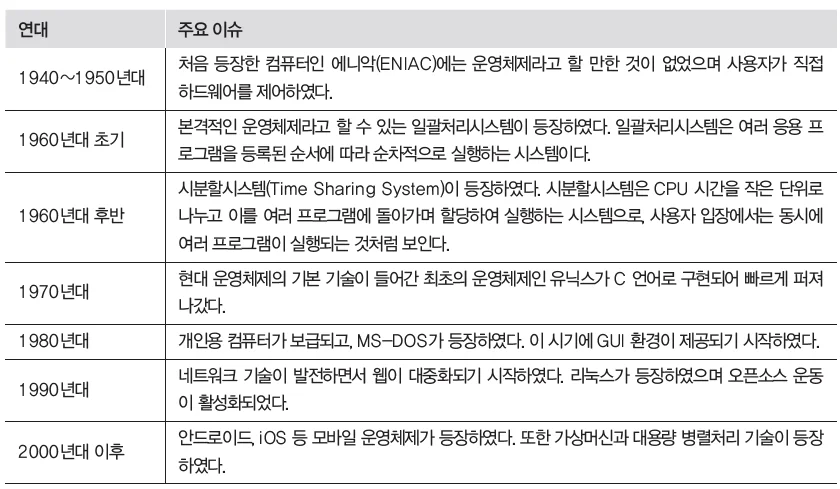
리눅스와 유닉스
- 리눅스: 유닉스 계열 운영 체제, '리누스가 만든 유닉스'라는 의미
- 유닉스: 1969년AT&T 벨 연구소에서 개발, 1971년C 언어로 재개발된 최초의 고급 프로그래밍 언어 기반 운영 체제. 상용화 버전(시스템 계열)과 오픈 소스 버전(BSD 계열)으로 발전
- 리눅스의 등장: 1980년대 후반, BSD 유닉스가AT&T와 법적 공방 중 리누스 토르발스가 개발 리눅스의 시작과 발전
- 핀란드 헬싱키 대학교 학생인 리누스 베네딕트 토르발스가 교육용 운영 체제 미 닉스를 참고해 개발
- 오픈 소스 운동에 합류되며 발전, 현재는 서버, 슈퍼컴퓨터, 임베디드 시스템, 모바일 기기에서 사용, 안드로이드 운영 체제도 리눅스 기반
- 리눅스 커널: 1991년8월 처음 공개, 현재 최신 버전6.9(2024년5월25일기준) 리눅스의 특징
- 리눅스는 공개 소프트웨어이며 무료로 사용할 수 있다.
- 유닉스와 완벽한 호환성을 유지한다.
- 서버용 운영 체제로 많이 사용된다.
- 편리한GUI 환경을 제공한다.
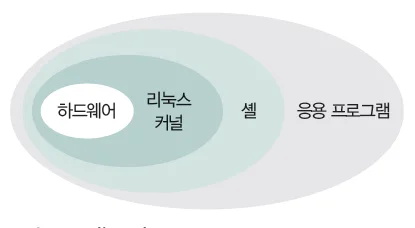
- 운영 체제의 구성 요소
- 커널: 시스템의 핵심 기능을 담당
- 파일 시스템: 데이터 저장 및 관리
- 디바이스 드라이버: 하드웨어와의 통신
- 시스템 호출: 운영 체제 서비스 접근
- 인터페이스: 사용자와의 상호 작용 • CPU의 동작 모드
- 커널 모드: 하드웨어 자원에 직접 접근 가능
- 사용자 모드: 시스템 호출을 통해 자원 접근 운영 체제의 기능
- 프로세스 관리: 프로세스 생성, 스케줄 링, 관리
- 메모리 관리: 메모리 할당/해제, 가상 메모리
- 파일 시스템 관리: 파일/디렉터 리 생성, 읽기, 쓰기, 삭제
- 입출력 관리: 데이터 입출력, 버퍼링, 스케줄링
- 자원 관리 및 보호: 하드웨어 자원 관리, 충돌 방지
- 사용자 인터페이스 제공: GUI 및 명령 행 인터페이스 제공
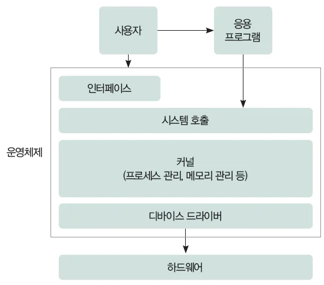
커널
- 하드웨어를 초기화해 사용할 수 있게하는 운영 체제의 핵심 부분. 여러 소프트웨어가 운영 체제에서 잘 작동할 수 있도록 메모리와 프로세스를 관리하고, 네트워크를 연결하는 등 주요 기능을 제공
파일, 파일 시스템
- 파일: 정보를 저장하는 기본 단위
- 파일 시스템: HDD, SSD 등 저장 장치에 파일을 저장하고 관리하는 소프트웨어. 파일 시스템은 파일의 이름, 크기, 저장 위치를 저장하고, 파일에 대한 읽기/쓰기/실행을 제어하며, 파일의 권한을 관리하고 저장 장치에 대한 접근도 제어 네트워크 시스템
- 네트워크 드라이버(network driver) : 유선 랜, 와이파이, 블루투스 등 네트워크 장치를 초기화해 사용할 수 있게하는 장치 드라이버
- 네트워크 스택(network stack) : 네트워크 장치를 통해 들어온 네트워크 트래픽을 처리하는 네트워크 프로토콜을 구현한 소프트웨어
- 네트워크 프로토콜(network protocol) : 네트워크에서 데이터를 주고받는 데 적용되는 통신 규약 리눅스와 운영 체계
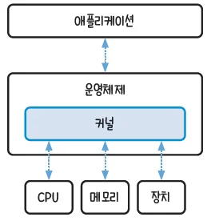
리눅스의 계열 공개형 오픈 소스 운영 체제. 마이크로소프트- 윈도우, 애플– IOS 와 달리 리눅스는 종류가 많다 레드햇 계열 페도라에서 파생된 배포 판들이다. 패키지 형식은.rpm이며 패키지 관리자로yum을 사용하는 것이 특징이다. 서버용으로 사용되는 경우가 대부분이다. 얼마 없는 상용 리눅스 중에서도 굉장히 잘 나가는 편인데, 이는 서버 시장이 주 타겟인 배포 판이기 때문 맨드리바/마제야 계열 마제야에서 파생된 배포 판들. 본래 맨드리바 기반이었으나, 맨드리바가 개발 중단되면서 독립하였다. 쉬운 사용성을 추구하며, KDE를 주력 데스크톱 환경으로 밀고 있는 몇 안 되는 배포 판들이다. 데비안 계열 데비안에서 파생된 배포 판들. 패키지 형식은.deb이며, 패키지 관리자로apt를 이용한다. 그 외우 분투, 아치, 슬랙웨어 등등
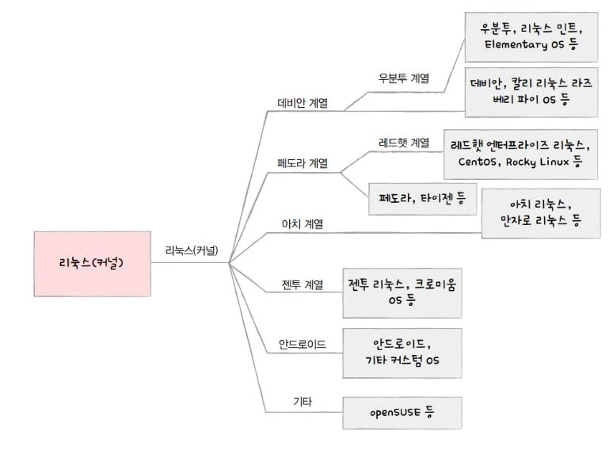
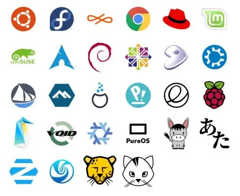
다양한 리눅스 종류 공개형 오픈 소스 운영 체제. 마이크로소프트- 윈도우, 애플– IOS 와 달리 리눅스는 종류가 많다
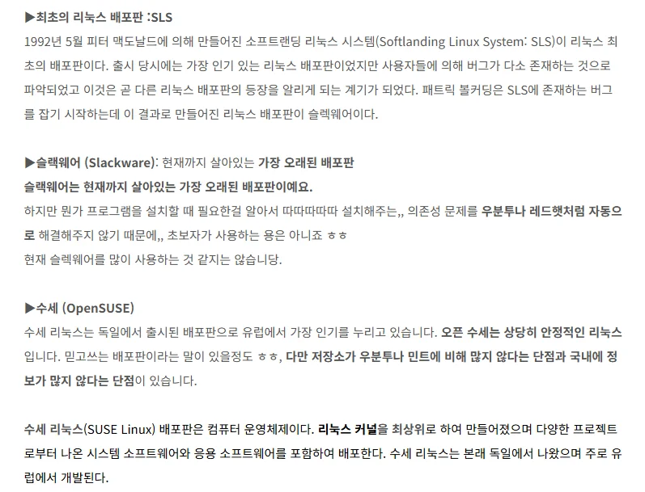
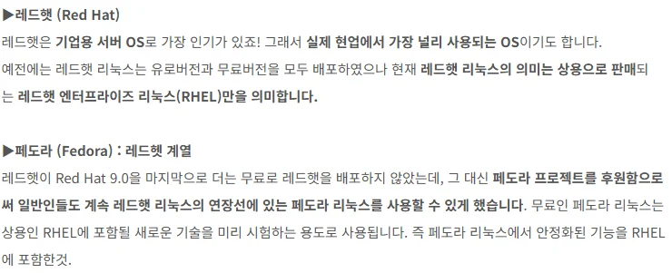
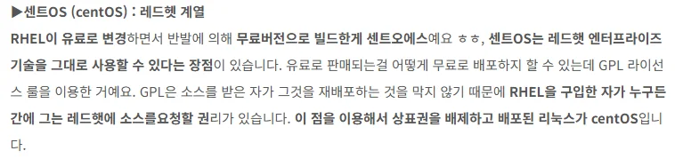
어디에 쓰일까
- 서버: IT 서비스를 구성하기 위한 서버
- 클라우드 컴퓨팅: 클라우드 서비스를 구축하기 위한 백 엔드
- 임베디드 시스템: PC나 서버 환경에 비해 제한적인 자원을 가진 경우
- 모바일 기기: 스마트폰이나 태블릿 등 누가/왜 배워야할까
- 컴퓨터와 관련한 직군
- 소프트웨어 개발자
- 시스템 관리자, 소프트웨어 엔지니어
- 네트워크 엔지니어
- 데이터 과학자나AI 전문가 C-ITS C-ITS Smart Factory Smart Factory
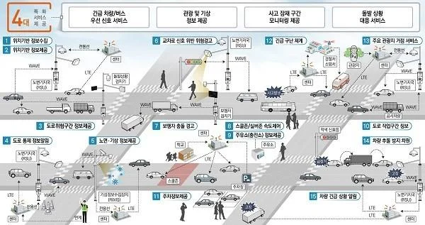
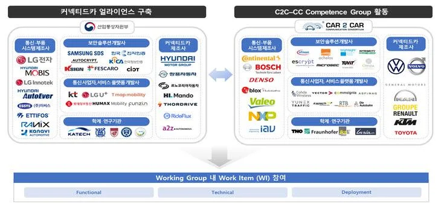
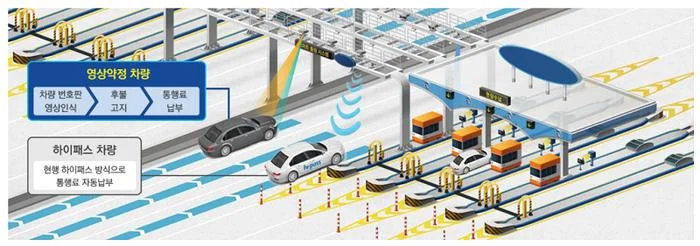
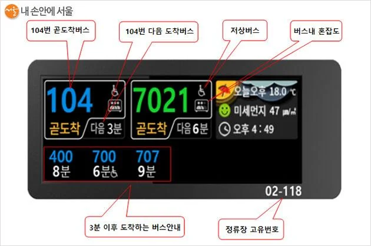
ROS와 리눅스
- 운영 체계 라이선스-> 오픈API
- 개발 시간 단축-> API, 생태계 활용
- 편리한디버깅도구및시각화
- 많은 사용자 및 생태계-> 오픈API 시각화 도구 ROS는 다양한 생태계를 지향하여 특정OS, 특정 프로그래밍 언어가 강제되지 않지만 해당 이유로 인해 본 강의에서는ROS를 리눅스(우분투)에서 사용한다 ROS에서 왜 파이썬을 쓰는가? 우리가 그 동안 배운AI를 로봇과 연동시키기 위해 호환성을 위해 같은 프로그래밍 언어로 구성하면 유리한 부분이 있다. 또한 시스템을 구축한 후 유지/보수/관리 측면에서 다른 프로그래밍 언어로 구축하게 되면 인력 관리에 이슈가 생길 수 있어 하나의 프로그래밍 언어로 통일하는 것이 좋다
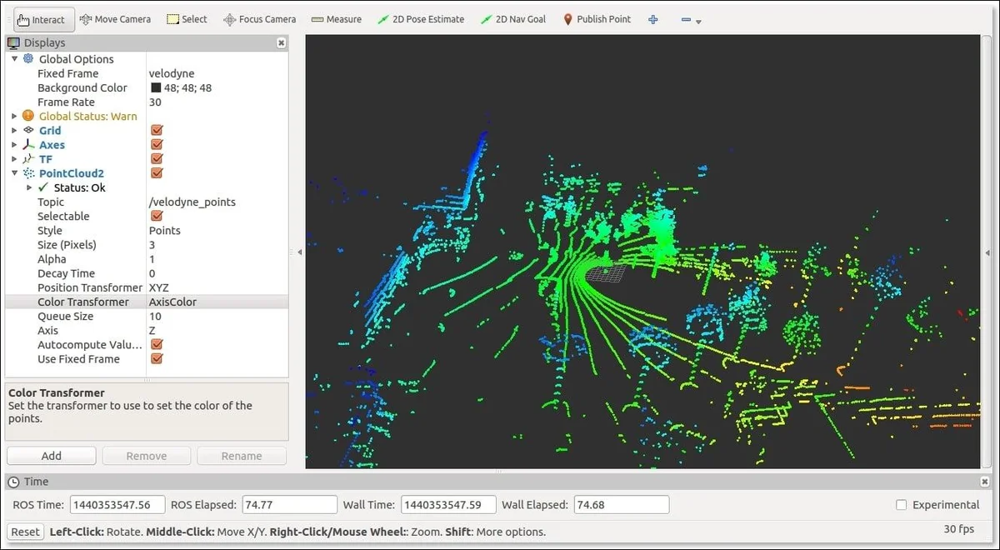
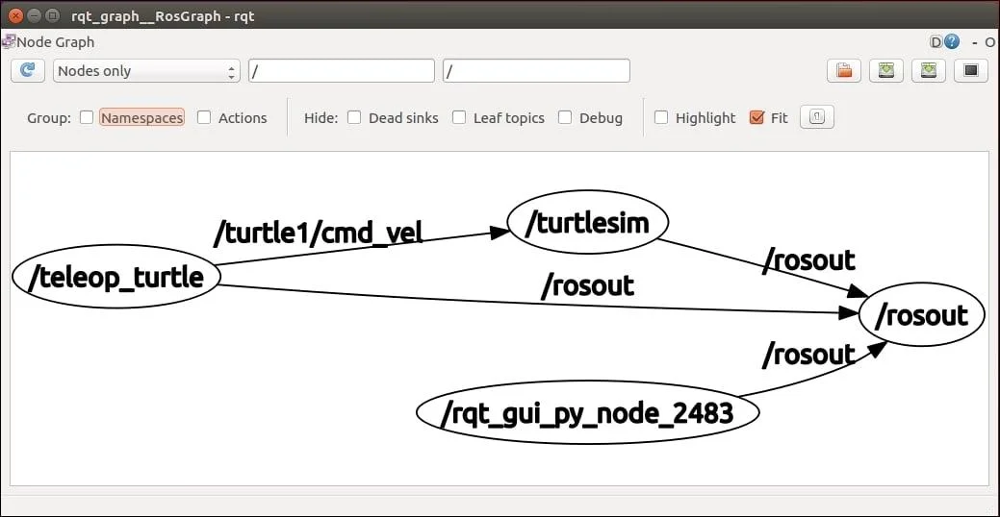
리눅스CLI 실습(디렉토리, 계정, 기본 명령어 등) GUI CLI 방식 그래픽 텍스트 메모리 소비 높음 낮음 속도 느림 빠름 진입 장벽 쉬움 어려움
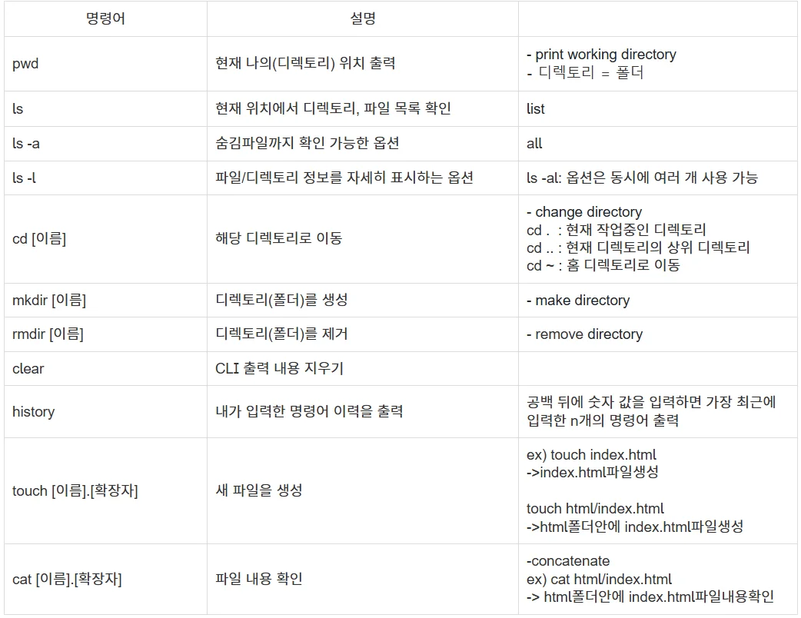
리눅스CLI 실습(디렉토리, 계정, 기본 명령어 등)
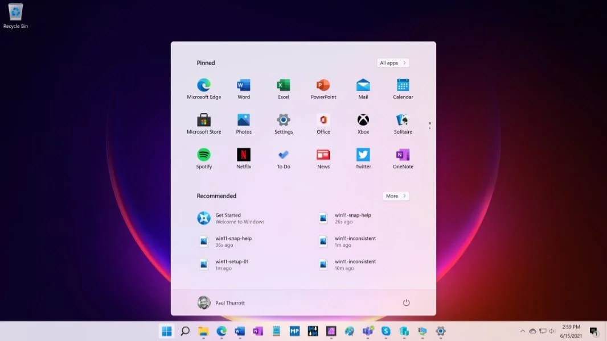
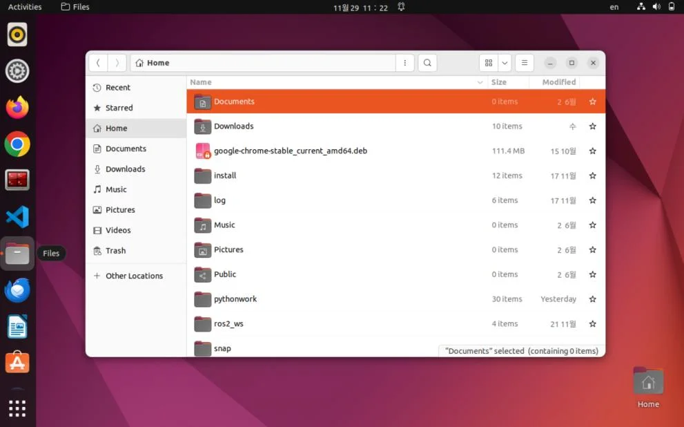
리눅스CLI 실습(디렉토리, 계정, 기본 명령어 등) Linux의shell → bash Windows의shell → cmd.exe Windows의shell → powershell.exe
리눅스CLI 실습(디렉토리, 계정, 기본 명령어 등) Windows와 리눅스의 디렉토리 구조 비교
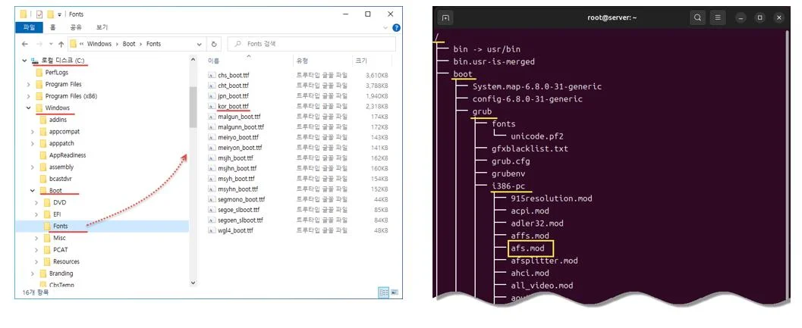
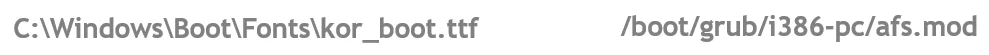
리눅스CLI 실습(디렉토리, 계정, 기본 명령어 등) FHS(Filesystem Hierarchy Standard) 구성 /bin: ls, cd, cp, mv과 같은 기본적인 명령어(binary)를 저장하는 디렉토리로, 대부분의 실행 파일을 포함함 /boot: OS 부팅에 대한 파일을 담고 있는 디렉토리로, 커널 이미지 파일은 부팅 시 매우 중요함 /dev: 입출력 장치와 관련된device 디렉토리 Ex) /dev/had(하드 디스크), /dev/sda(SCSI 타입 하드 디스크) /etc: 시스템 환경 설정 파일과 시스템 부팅, 셧다운 시 필요한 파일들의 디렉토리 /home: user의 홈 디렉토리, 사용자 계정 명과 동일하며root는/root가 홈 디렉토리 /media: CD_ROM,USB 등 외부 장치 연결 디렉토리 /mnt: 파일을 임시로 연결(mounting)하는 디렉토리 /proc: 프로세스(process)와OS 정보를 제공하기 위한 가상 파일 시스템의 디렉토리로, 각종 정보를kernel 모드가 아닌user 모드에서 쉽게 접근할 수 있도록해 줌 -문자 디렉토리는 시스템과 커널 정보, 숫자 디렉토리는 현재 실행 중인 프로세스의 정보를 나타냄 /root: 일반 사용자가 접근할 수 없는 시스템 관리자root의 홈 디렉토리

리눅스CLI 실습(디렉토리, 계정, 기본 명령어 등) FHS(Filesystem Hierarchy Standard) 구성 /sbin: system Binary를 의미하고 시스템 관리를 위한 실행 유틸리티를 담고 있다. Root 만이 실행할 수 있는 프로그램과 명령어가 있다. Ex) fdisk, reboot /sys: 리눅스kernel 관련 정보가 있는 디렉토리 /temp: 발생한 임시 데이터가 저장되는 디렉토리, 수시로 생성 및 삭제되며 부팅 시 초기화됨 /usr: 기본 실행 파일, 라이브 버리 파일, 헤더 파일 등이 저장되어 있는 공유 파일 시스템 디렉토리로 사용자와 관련된 대부분의 응용 프로그램과 파일이 저장되어 있음 /var: 시스템 운영 중 발생한 가변 데이터와 로그가 저장되는 디렉토리 /opt: operation을 의미하며 타사 응용 프로그램을 설치하는 디렉토리, CentOS는없음 /lib: 시스템 운영 및 프로그램 작동 시 필요한 공유 라이브러리(*.so)
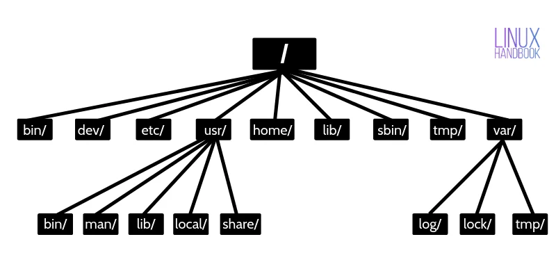
리눅스CLI 실습(디렉토리, 계정, 기본 명령어 등) 루트 디렉토리
- 디렉토리(directory): 파일 시스템을 계층화할 때 사용하는 도구
- 루트 디렉토리(root directory): 파일 시스템의 최상단에 위치하는 디렉토리 현재 작업 디렉토리
- 현재 작업 디렉토리: Bash가실행 중인 디렉터 리 홈 디렉토리
- 홈 디렉토리(home directory): 리눅스에 사용자를 추가하면 사용자별로 할당하는 디렉토리 루트 디렉터 리 하위의 주요 디렉토리
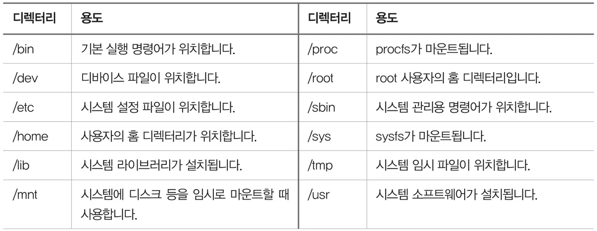
리눅스CLI 실습(디렉토리, 계정, 기본 명령어 등) 루트 디렉터 리와 서브 디렉터 리
- 최상단에 루트 디렉터 리(/)가 있고, 그 아래에etc, usr, home, tmp 같은 디렉터리가 있음
- 루트 디렉터 리: 유일하게 부모 디렉터리가 없는 디렉터 리. 아래에는 기본적으로 서브 디렉터리가 있음
- 디렉터 리 아래에 있는 디렉터 리를 서브 디렉터 리sub directory 또는 하위 디렉터리라고 함
- 서브 디렉터 리의 입장에서 보면 위에 자신을 포함하고 있는 디렉터리가 있는데, 이를 부모 디렉터 리parent directory 또는 상위 디렉터리라고 함
- 상위 디렉터 리는..(마침표 두 개)로 표시하며, .(마침표 한 개)는 현재 디렉터 리를 말함
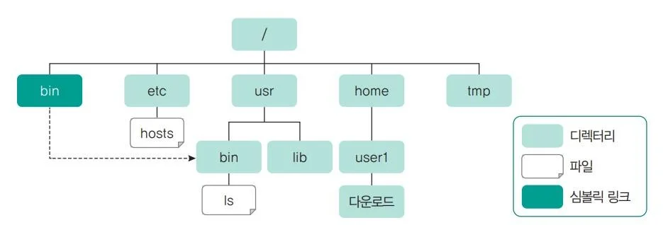
리눅스CLI 실습(디렉토리, 계정, 기본 명령어 등)
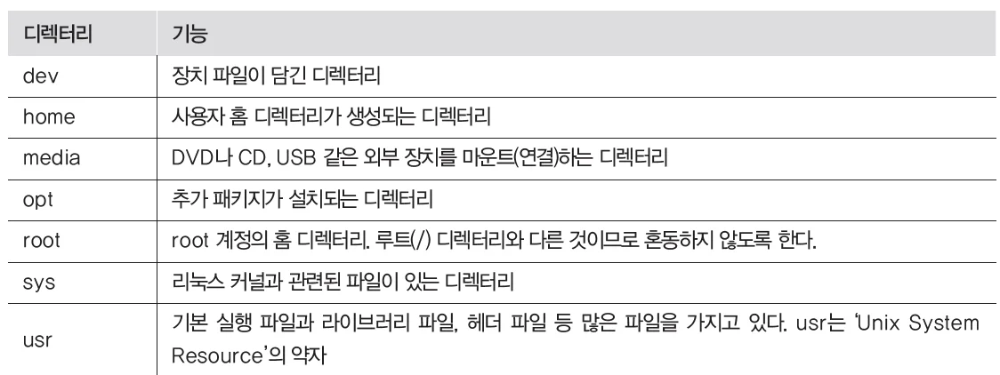
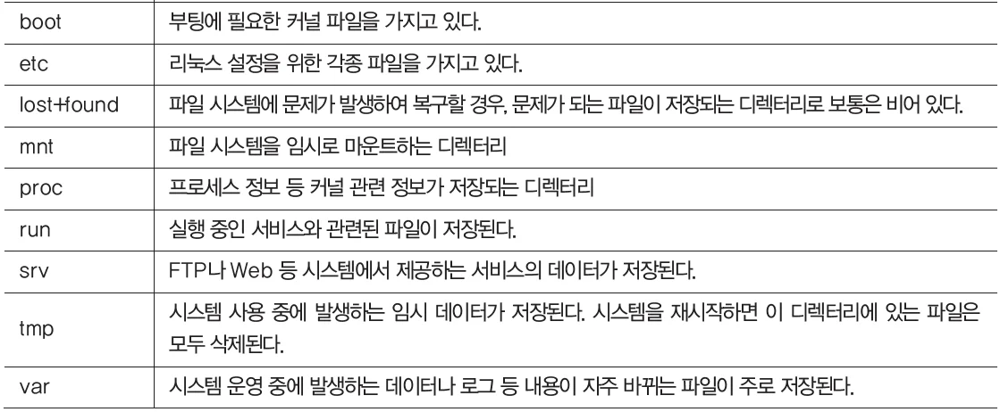
리눅스CLI 실습(디렉토리, 계정, 기본 명령어 등) 현재 디렉터 리 확인(pwd)
- 현재 디렉터 리를 확인하는 명령은pwd
- user1 계정으로 로그인하면 현재 디렉터 리는user1 계정의 홈 디렉터리가 됨 디렉터리 이동(cd)
- 디렉터 리에서 다른 디렉터 리로 이동할 때는cd 명령을 사용
- cd 명령과 함께 이동하고자하는 목적지 디렉터 리를 지정하면 해당 디렉터 리로 이동
- 이동할 디렉터 리의 경로 명으로 절대 경로 명과 상대 경로 명 둘 다 사용할 수 있음
- 이동한 뒤pwd 명령을 사용하여 현재 디렉터리가 바뀌었는지 확인( ~가tmp로바뀜)
- 프롬프트에 현재 디렉터 리의 이름을 표시하도록 설정되어 있는 것
- 상대 경로 명을 이용하여 디렉터 리를 이동할 경우 상위 디렉터 리로 이동해야하므로..(마침표 두 개)로 시작 원래의 홈 디렉터 리로 이동 방법
- cd /home/user1: 절대 경로 명을 사용하여 홈 디렉터 리로 이동
- cd ../../home/user1: 현재/usr/lib 디렉터 리에 있으므로 이를 기준으로 상대 경로 명을 사용하여 홈 디렉터 리로 이동
- cd ~: 홈 디렉터 리를 나타내는 기호인~를 사용하여 홈 디렉터 리로 이동
- cd: 목적지를 지정하지 않고cd 명령만 사용하면 해당 계정의 홈 디렉터 리로 이동
리눅스CLI 실습(디렉토리, 계정, 기본 명령어 등) 디렉터리 내용 확인
- ls : 디렉터 리에 있는 파일이나 서브 디렉터 리 등 디렉터 리의 내용을 보는 명령
- ls 명령은 다양한 기능을 제공하는 옵션을 사용하고, 내용을 보고 싶은 목적지 디렉터 리를 인자로 지정할 수 있다
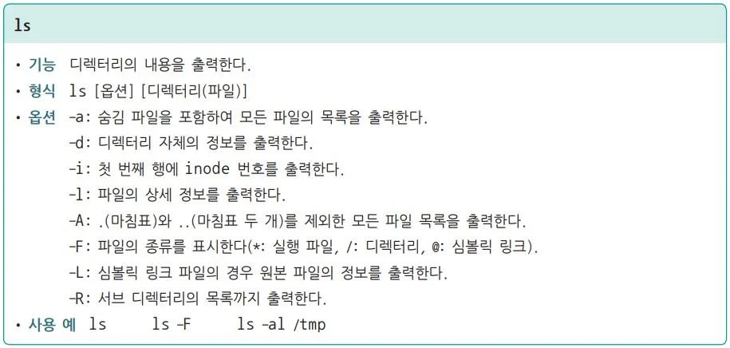
리눅스CLI 실습(디렉토리, 계정, 기본 명령어 등) 숨김 파일 확인하기: -a 옵션
- 리눅스에서는 파일 명이나 디렉터 리 명을.(마침표)로 시작하면 숨김 파일이 됨
- ls 명령만 사용해서는 보이지 않고-a 옵션을 지정해야함
- 현재 디렉터 리를 나타내는.(마침표)와 상위 디렉터 리를 나타내는..(마침표 두 개)도 확인할 수 있음 파일의 종류 표시하기: -F 옵션
- ls 명령에서도-F 옵션을 사용하면 파일의 종류를 구분하는 기호가 표시됨
- 파일 명 뒤에/가 붙으면 디렉터 리, @이 붙으면 심볼 릭 링크, *가 붙으면 실행 파일을 의미하고, 아무 표시도 없으면 일반 파일 옵션 여러 개 사용하기
- 옵션을 연결할 때는-(하이픈) 뒤에 옵션만 나열
- 숨김 파일을 보여 주는a 옵션과 파일의 종류를 보여 주는F 옵션을 연결하여 사용하면 숨김 파일의 종류도 알 수 있음
- .(마침표)와..(마침표 두 개)에도/가 붙어 있음
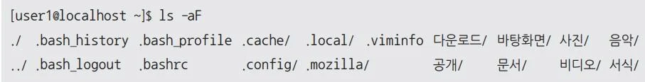
리눅스CLI 실습(디렉토리, 계정, 기본 명령어 등) 지정한 디렉터 리의 내용 출력하기
- 해당 디렉터 리로 이동하지 않고도 디렉터 리의 내용을 확인할 수 있음
- 옵션과 인자를 함께 사용할 수도 있음 상세 정보 출력하기: -l 옵션
- 디렉터 리에 있는 파일들의 상세한 정보를 보려면-l 옵션을 사용 디렉터 리의 자체 정보 확인하기: -d 옵션
- 디렉터 리의 자체 정보를 확인할 때는-d 옵션을 사용 ls 명령과 비슷한 명령: dir, vdir
- 디렉터 리의 내용을 보는dir과vdir 명령
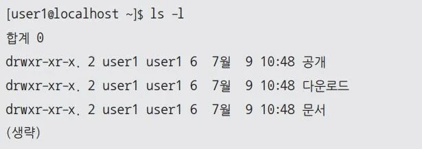
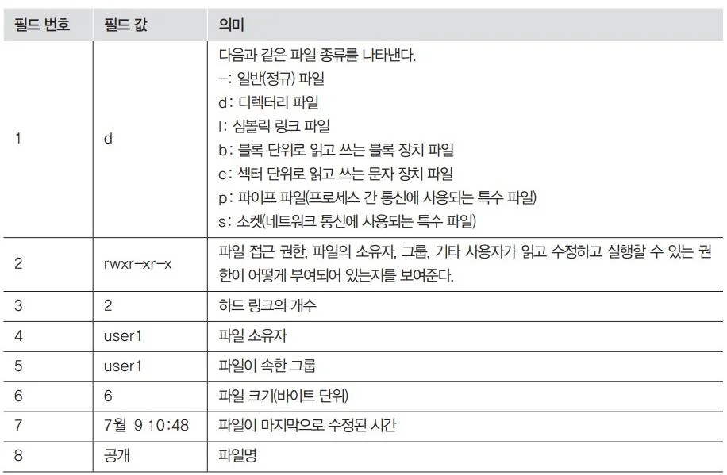
리눅스CLI 실습(디렉토리, 계정, 기본 명령어 등) 디렉터 리 한 개 만들기
- 디렉터 리를 한 개만 만들려면mkdir 명령에 인자로 생성하려는 디렉터 리를 지정하면 됨 동시에 디렉터 리 여러 개 만들기 중간 디렉터 리를 자동으로 만들기: -p 옵션
- mkdir 명령 다음에-p 옵션을 사용하면, 생성할 디렉터 리로 지정한 경로 중 중간 단계의 디렉터리가 없을 경우 자동으로 중간 단계 디렉터 리를 생성한 후 최종 디렉터 리를 만듦
- 비교해 보기: mkdir 명령에-p 옵션을 사용하지 않은 경우vs mkdir 명령에-p 옵션을 사용한 경우
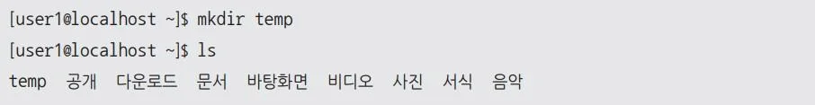
리눅스CLI 실습(디렉토리, 계정, 기본 명령어 등) 디렉터 리 삭제
- mkdir 명령 예에서 만든tmp3을 삭제하는 예
- rmdir 명령으로 디렉터 리를 삭제할 때는 해당 디렉터리가 비어 있어야함
- 디렉터리에 파일이나 서브 디렉터리가 남아 있으면rmdir로 디렉터 리를 삭제할 수 없음
- 비어 있지 않은 디렉터 리를 삭제하려했을 때 실습
- 홈 디렉터 리로 이동
- Test 디렉터 리만 들고 이동하기
- 디렉터 리 동시에 만들기$mkdir one two three
- 중간 경로 tmp 디렉터 리 자동 생성$mkdir –p one/tmp/test
- 하위 디렉터 리 보기$ls –R one
- $rmdir one
- $rmdir two three 실행해 보기
리눅스CLI 실습(디렉토리, 계정, 기본 명령어 등) 파일 내용 출력
- 파일 내용을 연속으로 출력하기: cat 파일 내용 출력
- /etc/hosts 파일의 내용을cat 명령으로 확인 파일 내용을 화면 단위로 출력하기: more
- more 명령은 파일 내용을 화면 단위로 출력하고, 출력할 내용이 더 있으면 화면 하단에‘--More--(0%)’와 같이 알려 줌
리눅스CLI 실습(디렉토리, 계정, 기본 명령어 등) 파일 내용을 화면 단위로 출력하기: less
- more 명령은 이미 스크롤되어 지나간 내용을 다시 볼 수 없다는 것
- less 명령을 사용하면 파일 내용을 앞뒤로 스크롤하며 이동할 수 있음
리눅스CLI 실습(디렉토리, 계정, 기본 명령어 등) 파일 내용의 뒷부분 출력하기: tail
- tail은 파일 뒷부분의 몇 행을 출력, 기본 값은10으로 파일 뒷부분의10행이 출력됨
리눅스의 시간(2038년1월19일03시14분07초) 1. 제목: 2038년문제(Y2038) 2. 개요: 32bit 운영 체계를 사용하는OS(Linux, Unix)는2038/01/19 03:14:07초를 지나게 되면1901/12/31 혹은1970/01/01 시점으로 타임 슬립하는 문제. 정식 명칭은Y2K38, Y2038이라고 함 3. 원인 : 컴퓨터에서 그레고리력 시간을 계산하는 방법에는 여러 가지가 있는데, 현재 보편적인 방법은Unix Time을 사용함. 해당 방법은32bit 크기의 정수형을 사용하여 시간을 나타냄. 초당1씩증가. 32bit의 한계 점은2,147,483,647이므로 해당 수를 넘어가게 되면overflow현상이 발생하고, 최소 값으로 돌아가게 됨 4. 해결 방법:
- 부호 없는 정수형으로 변경. 음수를 제외하면0 ~ 4,294,967,295까지 증가. 즉, 2106년까지 늦출 수 있다.
- 그러나1970년1월1일 이전의 시간을 셀 수 없으므로 그 이전 출생자들의 정보가 모두 사라지는 단점
- OS를64bit이상으로 변경. 단순히OS만 변경하면 안 되고32bit에 맞춰져 있는 실행 파일, 라이브러리 등64bit정수형으로 변경 필요 5. 이 문제를 해결하면 언제까지 가능? 64bit 정수형 최대 값= 9,223,372,036,854,775,807. 1970년부터 계산하면 서기2922억7702만6596년12월4일15시30분8초 6. 참고:
- Y2K : 1999/12/31 23:59:59 → 2000/01/01 00:00:00
- 10년= 10년 x 365일 x 24시간x 3600초= 315,360,000초(약3억초)
- 100년= 100년 x 365일 x 24시간x 3600초= 3,153,600,000초(약31억초)
- 80년= 80년 x 365일 x 24시간x 3600초= 2,522,880,000초(약25억초)
리눅스CLI 실습(디렉토리, 계정, 기본 명령어 등) root 시스템을 관리할 수 있는 관리자 권한의 계정이자 슈퍼 유저 리눅스 파일 체제의 최상위 디렉토리( / )로도 표현한다. root 권한이 있으면 모든 파일과 디렉토리에 대해 읽고 쓸 수 있고, 생성할 수도 있지만 제거할 수도 있다. 시스템 구성을 변경할 수도 있다. 그래서 매우 편하지만 조심히 행동해야하는 계정이다. su (Switch User) 현재 계정을 로그 아웃하지 않고 다른 계정으로 전환하는 명령어 sudo란 무엇인가? sudo는superuser do의 줄임 말로, 일시적으로 관리자 권한을 부여하여 특정 명령어를 실행할 수 있게해 주는 명령어입니다. 리눅스에서는 기본적으로 일반 사용자와 관리자(root) 사용자를 구분하여 시스템을 보호합니다. sudo를 통해 사용자는root 계정의 권한을 일시적으로 사용할 수 있으며, 시스템 파일을 수정하거나 프로그램을 설치하는 등 관리자 권한이 필요한 작업을 수행할 수 있습니다
리눅스CLI 실습(디렉토리, 계정, 기본 명령어 등) 권한 설정 이해하기(drwxr-xr-x 형식)
- 리눅스에서 파일과 디렉터 리는 세 가지 사용자(소유자, 그룹, 기타 사용자)에게 읽기(r), 쓰기(w), 실행(x) 권한을 가질 수 있습니다. 이 권한은chmod 명령어를 통해 수정 가능합니다. 형식 설명(drwxr-xr-x)
- 첫글자: 파일 타입(d는 디렉터 리, -는파일)
- 그 다음 세 글자: 소유자의 권한(rwx - 읽기, 쓰기, 실행)
- 그 다음 세 글자: 그룹의 권한(r-x - 읽기, 실행)
- 마지막 세 글자: 기타 사용자의 권한(r-x - 읽기, 실행) 파일 권한 수정 명령어
- 읽기, 쓰기, 실행 권한 부여
- chmod u+r 파일명: 소유자에게 읽기 권한 추가
- chmod g-w 파일명: 그룹의 쓰기 권한 제거
- chmod o+x 파일명: 기타 사용자에게 실행 권한 추가
- 숫자 코드로 설정
- 4 = 읽기(r), 2 = 쓰기(w), 1 = 실행(x)
- 예를 들어, chmod 755 파일 명 명령어는drwxr-xr-x와 같은 설정을 의미합니다.
리눅스CLI 실습(디렉토리, 계정, 기본 명령어 등)

리눅스CLI 실습(디렉토리, 계정, 기본 명령어 등) [ chmod 사용하여 권한 변경]
- 기호 모드(Symbolic Mode) 사용
- 숫자 모드(Octal Mode）사용 ※ 하위 폴더와 파일에도 적용하는 옵션
리눅스CLI 실습(디렉토리, 계정, 기본 명령어 등) 루트 암호 설정하기 $sudo passwd root 기호 모드
- 사용자 카테고리: 소유자, 그룹, 기타 사용자를 나타내는 문자로 표기
- 연산자: 권한 부여나 제거를 나타내는 기호로 표기
- 접근 권한 기호: 읽기, 쓰기, 실행을 나타내는 문자를 사용
기호 모드로 접근 권한 변경하기
그룹에 쓰기와 실행 권한을 부여(g+wx)
기타 사용자에게 실행 권한을 부여(o+x)
그룹과 기타 사용자의 실행 권한을 제거(go-x) 리눅스CLI 실습(디렉토리, 계정, 기본 명령어 등)
리눅스CLI 실습(디렉토리, 계정, 기본 명령어 등) 상대 경로와 절대 경로 경로(path): 파일의 위치 정보를 표현한 것 상대 경로(relative path): 현재 작업 디렉터 리를 기준으로 파일 경로를 나타냄 절대 경로(absolute path): 루트 디렉터 리를 기준으로 파일 경로를 나타냄
리눅스CLI 실습(디렉토리, 계정, 기본 명령어 등) 파일 내용 검색하기: grep
grep의 가장 기본적인 사용법으로 인자로 지정한 문자열을 검색하는 예
-n 옵션을 사용하면 검색된 행 번호도 함께 출력됨
리눅스CLI 실습(디렉토리, 계정, 기본 명령어 등) 표준 입출력 장치
- 표준 입력 장치: 셸 이 작업을 수행하는 데 필요한 정보를 받아들이는 장치
- 표준 출력 장치: 실행 결과를 내보내는 장치
- 표준 오류 장치: 표준 출력과 별도로 오류 메시지를 내보내는 장치
- 표준 입력 장치는 키보드로 설정되어 있고, 표준 출력 및 표준 오류 장치는 화면으로 설정되어 있음
- 파일 디 스크립터: 작업 중 필요한 파일에 일련번호를 붙여서 관리하는값
- 입출력 장치를 변경할 때 파일 디 스크립터를 사용
리눅스CLI 실습(디렉토리, 계정, 기본 명령어 등) 출력 리 다이 렉 션
- 리 다이 렉 션: 표준 입출력 장치를 파일로 바꾸는 것
- 출력 결과를 저장할 파일이 이미 존재하는 파일일 경우, 기존 파일의 내용을 유지할지 말지에 따라 달라짐
- 기존 파일의 내용을 삭제하고 새로 결과를 저장할 때는>를, 기존 파일의 내용 뒤에 결과를 추가할 때는>>를사용 • 파일 덮어 쓰기: >
- 표준 출력 파일을 바꾸는 특수 문자>
- 첫 번째 형식의1은 파일 디 스크립터1번을 의미
- 파일 디 스크립터1은 생략 가능하며, 보통1이 생략된 두 번째 형식을 사용
- 셸은>를 사용한 리 다이 렉 션에서 지정한 파일 명의 파일이 없으면 파일을 생성하여 명령의 수행 결과를 저장
- 해당 파일이 있으면 기존 내용이 없어지고 명령의 수행 결과로 대체되므로 출력 리 다이 렉 션을 사용할 때는 먼저 해당 이름의 파일이 있는지 확인해야함
리눅스CLI 실습(디렉토리, 계정, 기본 명령어 등)
리눅스CLI 실습(디렉토리, 계정, 기본 명령어 등)
리눅스CLI 실습
-
ls Windows의dir과 같은 역할로, 해당 디렉터 리에 있는 파일의 목록을 나열 예) # ls /etc/systemd
-
cd 디렉터 리를 이동 예) # cd ../etc/systemd
-
pwd 현재 디렉터 리의 전체 경로를 출력
-
touch 크기가0인 새 파일을 생성, 이미 존재하는 경우 수정 시간을 변경 예) # touch abc.txt
리눅스CLI 실습
-
rm 파일이나 디렉터 리를 삭제 예) # rm -rf abc
-
cp 파일이나 디렉터 리를 복사 예) # cp abc.txt cba.txt
-
mv 파일과 디렉터 리의 이름을 변경하거나 위치 이동 시 사용 예) mv abc.txt www.txt
-
mkdir 새로운 디렉터 리를 생성 예) # mkdir abc 실습 디렉터 리 생성하기
- mkdir(make directory) 명령어
-
실습 순서
-
ls 명령어로animals 디렉터 리 생성
- dog, cat, cow 디렉터 리 생성
- snake 디렉터 리 생성
- -p 옵션을 넣지 않고fruits 디렉터 리 하 위에apple 디렉터 리 생성
- -p 옵션을 넣고 생성
- -p 옵션으로fruits/apple 디렉터 리를 다시 생성
리눅스CLI 실습
-
rmdir 디렉터 리를 삭제. (단, 비어 있어야함) 예) # rmdir abc
-
cat 텍스트로 작성된 파일을 화면에 출력 예) # cat a.txt b.txt
-
head, tail 텍스트로 작성된 파일의 앞10행 또는 마지막10행만 출력 예) # head /etc/systemd/user.conf
-
more 텍스트로 작성된 파일을 화면에 페이지 단위로 출력 예) # more /etc/systemd/system.conf
-
less more와 용도가 비슷하지만 기능이 더 확장된 명령 예) # less /etc/systemd/system.conf
-
file File이 어떤 종류의 파일인지를 표시 예) # file /etc/systemd/system.conf
-
clear 터미널 화면을 깨끗하게 지워 줌 예) # clear
-
nano 텍스트 편집기
리눅스CLI 실습 일반 파일 이동
- temporary의 파일 확인
- mv 명령어로say-hi 파일의 이름 변경
- greetings 파일의 이름 변경
- 파일 경로 변경
- temporary 디렉터 리 조회
- hello 파일을 현재 작업 디렉터 리로 이동
- 파일 이름 변경 temporary 디렉터 리의 파일 확인
temporary 디렉터리로이동¶
cd ~/temporary
현재디렉터리의파일목록확인¶
ls say-hi 파일의 이름 변경
say-hi 파일의이름을say-hello로변경¶
mv say-hi say-hello greetings 파일의 이름 변경
greetings 파일의이름을welcome으로변경¶
mv greetings welcome 파일 경로 변경
say-hello 파일을다른디렉터리로이동(예: ~/Documents)¶
mv say-hello ~/Documents temporary 디렉터 리 조회
다시temporary 디렉터리로이동한후목록확인¶
cd ~/temporary ls hello 파일을 현재 작업 디렉터 리로 이동
hello 파일을현재디렉터리로이동(예: ~/temporary에서다른위치로이동)¶
mv ~/temporary/hello . # 현재 디렉터 리로 이동 hello 파일의 이름 변경
hello 파일의이름을hi로변경¶
mv hello hi
리눅스CLI 실습 디렉터리 이동
- 현재 디렉터 리 확인
- haha 디렉터 리 생성
- hoho로 이름 변경
- 디렉터 리 위치 이동
- 디렉터리 이동하며hihi로 이름 변경 현재 디렉터 리 확인
현재작업중인디렉터리확인¶
pwd haha 디렉터 리 생성
현재디렉터리에haha라는새디렉터리생성¶
mkdir haha haha 디렉터 리 이름을hoho로변경
haha 디렉터리의이름을hoho로변경¶
mv haha hoho hoho 디렉터 리로 이동
hoho 디렉터리로이동¶
cd hoho 디렉터리 이동과 동시에hihi로 이름 변경
hoho 디렉터리를현재경로에서상위경로로이동시키면서hihi로이름변경¶
mv ../hoho ../hihi
상위디렉터리로이동하여변경된디렉터리확인¶
cd .. ls
리눅스CLI 실습 일반 파일 삭제
- 현재 상태 확인
- say-hi 파일 삭제
- -i 옵션을 주고hello 파일 삭제
- 여러 파일 한꺼번에 삭제 현재 상태 확인
현재디렉터리에있는파일목록을확인¶
ls say-hi 파일 삭제
say-hi 파일을삭제¶
rm say-hi -i 옵션을 주고hello 파일 삭제
hello 파일을삭제할때확인메시지표시¶
rm -i hello
삭제여부를묻는메시지가나오면y를입력해삭제를확정¶
여러 파일 한꺼번에 삭제
예를들어file1.txt, file2.txt, file3.txt 파일을한꺼번에삭제¶
rm file1.txt file2.txt file3.txt 또는, 특정 패턴에 맞는 파일을 모두 삭제할 수 있습니다. 예를 들어, .txt 확장자를 가진 파일 모두 삭제: rm *.txt
리눅스CLI 실습(디렉토리, 계정, 기본 명령어 등) 우분투 터미널 우분투 터미널은 사용자가 컴퓨터에 명령어를 입력하여 시스템을 제어 관리할 수 있습니다 아래에는 유용한 터미널 단축 키들을 모았습니다 터미널 단축 키 Ctrl + C: 현재 작업 중지 Ctrl + Z: 작업 일시 중지 Ctrl + D: 터미널 로그 아웃 또는 종료 Tab: 자동 완성 Ctrl + R: 명령어 기록에서 검색
터미널 터미널(terminal): 컴퓨터와 사용자 간에 상호 작용할 수 있게 연결하는 장치 입력 장치: 사용자가 컴퓨터에 명령을 전달하는 장치 출력 장치: 컴퓨터가 사용자에게 결과를 보여 주는 장치 셸(shell) 운영 체제가 제공하는 명령어 기반 인터페이스 셸 스크립트(shell script): 셸에서 동작 가능한 명령을 모아 놓은 파일 Bash(배시) 리누스 토르발즈가 리눅스를 개발할 때 리눅스로 처음 포 팅 한 프로그램 Gedit 초보자 친화적인 에디터 터미널과 셸의 관계 터미널은 사용자와 컴퓨터가 상호 작용하기 위한 매체 이 때 사용하는 도구 중 하나가 바로 셸 컴퓨터가 부팅되면 운영 체제는 터미널을 통해 사용자에게 내용을 보여 주거나 사용자로부터 명령을 입력 받을 수 있는 상태가 됨 apt-get install gedit -y 리눅스Terminator, 커널, 쉘, gedit, bash
gedit 실습 초보자 친화적인 에디터 apt-get install gedit -y 리눅스Terminator, 커널, 쉘, gedit, bash gedit